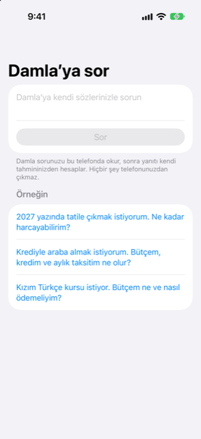

Kılavuz › Planlama
Damla’ya sor
Tatile, arabaya ya da derslere gücünüzün yetip yetmeyeceğini kendi sözlerinizle sorun.
Damla’ya sor, Plan sekmesinde, "buna gücüm yeter mi?" sorusunu kendi tahmininizden yanıtlayan bir soru kutusudur. Soruyu, söylediğiniz gibi yazarsınız. Damla size paranızın taşıyabileceği tutarı ve bu yanıtın neye dayandığını söyler.

Ne zaman kullanılır
- Bir tatile, düğüne, bir kursa ya da ev taşımaya bağlanmadan önce ve tahmininizin neye izin verdiğini öğrenmek istiyorsunuz.
- Bir şeye krediyle almayı düşünüyorsunuz ve bütçeyi, kaldırabileceği krediyi ve aylık ödemeyi istiyorsunuz.
- Bir şey zamanla ödeniyorsa (dersler, bir kurs) peşin ödemeyi yayma ile karşılaştırmak istiyorsunuz.
- Aksi hâlde "bunu harcasam ne olur?" diye merak edeceğiniz her an.
Adım adım
- Plan sekmesini açın ve Damla’ya sor'a dokunun.
- "Damla’ya kendi sözlerinizle sorun" yazılı kutuya dokunun ve sorunuzu yazın. Kutuyu doldurmak için Örneğin altındaki hazır sorulardan birine de dokunabilirsiniz.
- Sor'a dokunun.
- Yanıtı okuyun. Bir kart başlık tutarı gösterir; altında ayrıntılar ve Bunun dayandığı şeyler adlı bir bölüm vardır.
- Damla anlamadıysa bunu söyler. Şeyi adlandırmayı deneyin (bir tatil, krediyle bir araba, dersler) ve biliyorsanız tarihi ya da fiyatı ekleyin.
- Harcama ya da bir ödeme planı için, yanıtı bir hedefe dönüştürmek istiyorsanız Bunun için kenara ayır'a dokunun: Damla bunu bu tutar ve tarihle ekler, böylece her ay ne kenara koyacağını hesaplayabilir.
Yanıt nasıl yapılır
Damla sorunuzu, ne hakkında olduğunu, paraya ne zaman ihtiyacınız olduğunu ve yazdığınız fiyatı, vadeyi ya da faiz oranını bulmak için bu telefonda okur. Model yalnızca kelimeleri okur; asla hesap yapmaz.
Ardından yanıt, tahmininizden sıradan kodla hesaplanır:
- Bir tatil ya da başka bir harcama için: rahat bir tutar ve tahmininizin izin verdiği en fazla. Rahat, en fazlanın %80'idir; böylece sürprizler için pay kalır. Bir fiyat adlandırdıysanız, bir hap, fiyatın rahatça sığıp sığmadığını, sığınıp sıkışık olduğunu ya da tahmininizin izin verdiğinden fazla olduğunu söyler.
- Bir araba ya da başka bir kredi için: rahat bir aylık ödeme, bir ayın izin verdiği en fazla ve seçtiğiniz vade boyunca bu ödemenin taşıdığı kredi. Hâlen mümkün olan peşinatı ve toplam bütçenizi de gösterir. Kredi vadesini bir artırıp azaltma düğmesiyle (stepper) ay sayısı cinsinden, yıllık faiz oranını kendi alanında değiştirin. Yanıt, değiştirdikçe güncellenir. Bir fiyat yazdıysanız, Damla o fiyatın peşinat artı aylık ödemeler olarak neye benzediğini gösterir.
- Dersler ya da zamanla ödenen her şey için: fiyatı söylediyseniz, Damla peşin ödemeyi eşit aylık ödemelere yaymakla karşılaştırır. Her yolu, yarattığı en düşük bakiyeyle gösterir ve bakiyenizi rahat tutan en az ödemeyi önerir. Fiyatı söylemediyseniz, farklı ay sayılarında bir ayda ne kadar ödeyebileceğinizi gösterir.
Bunun dayandığı şeyler
Yanıt tahmininizi kullanır: gelirleriniz, faturalarınız, kartlarınız ve olağan harcamanız, ve hesaplarınızda hâlihazırda olan para. Banka hesaplarınızdan gelen, hâlihazırda fatura olmayan günlük harcama da sayılır; bölüm, ayda ne kadar varsaydığını söyler. Altında ayrıca tahminin başlangıç tarihini, en düşük bakiyenizi ve önemli olduğunda o tarihteki bakiyeyi görürsünüz.
Bilmenizde fayda var
- Sorunuz ve verileriniz telefonda kalır. Hiçbir şey telefondan çıkmaz.
- Yanıt, kendi sayılarınızdan bir tahmindir, finansal tavsiye değil.
- Karşılaştırılacak iki sayı, rahat ve en fazladır. Rahatın üzerinde harcayın ancak yalnızca sürprizler için daha ince bir payı kabul ediyorsanız.
- Yanıt kitaplarınız değiştikçe değişir; böylece gelir ya da fatura ekledikten sonra yeniden sorabilirsiniz.
İlgili
Anlaşılmayan ya da eksik bir şey mi var? support@raveniq.ai adresine yazın ve hangi sayfa olduğunu belirtin.